Key Moments
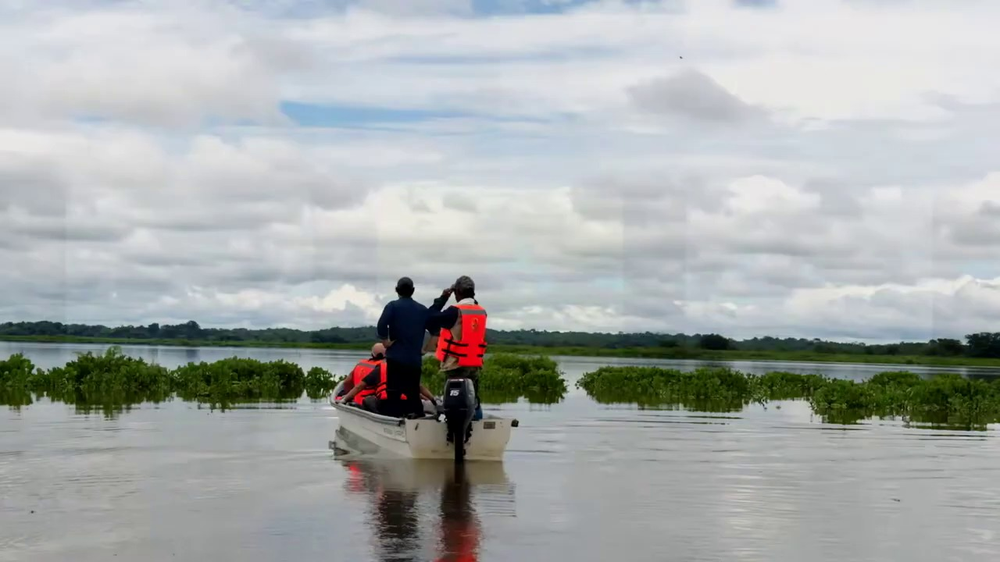
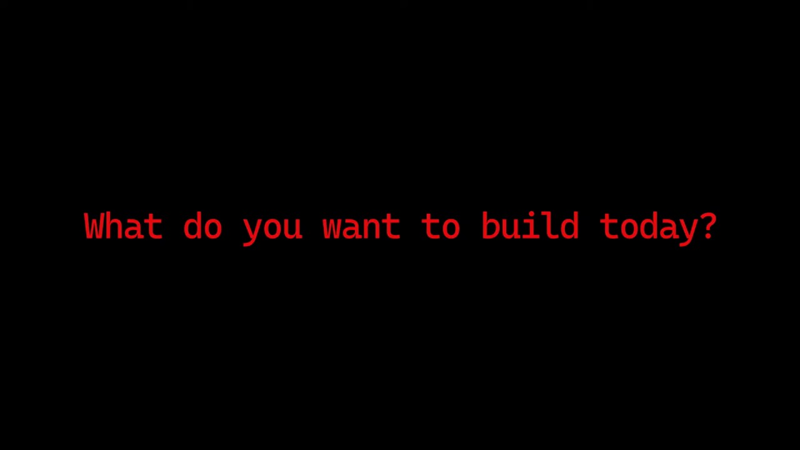
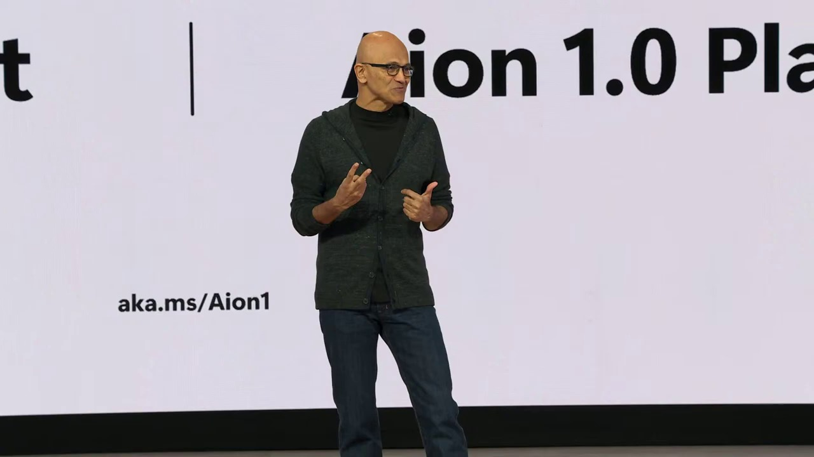
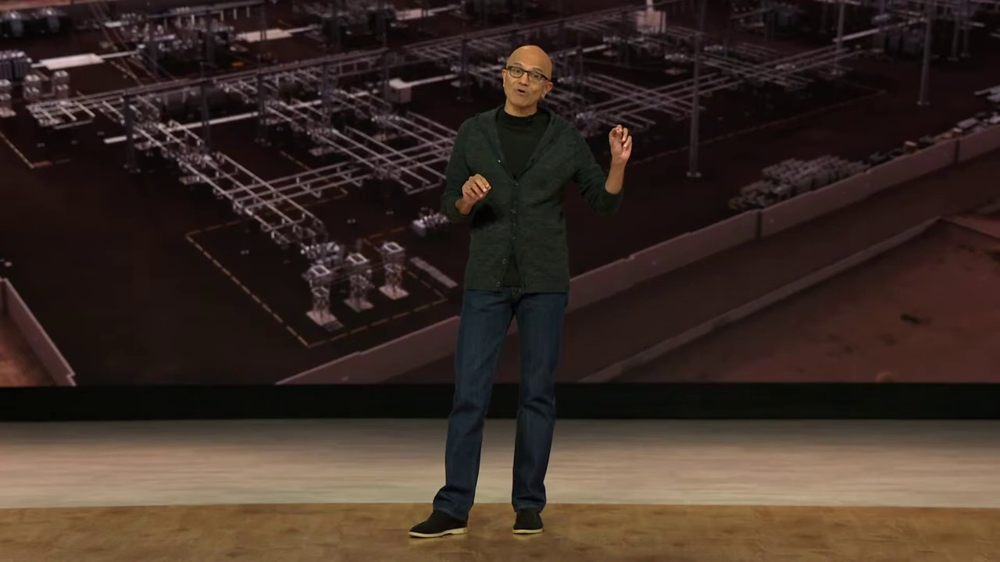
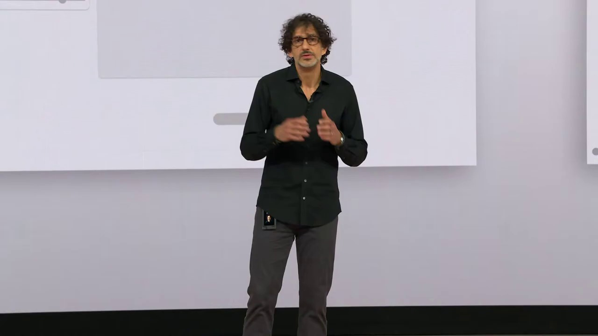
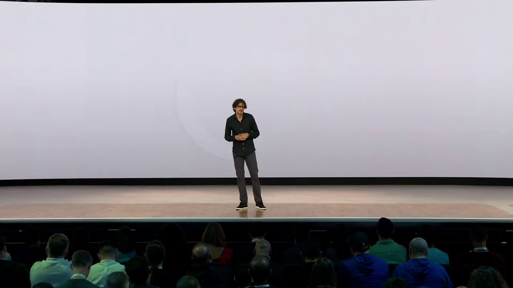
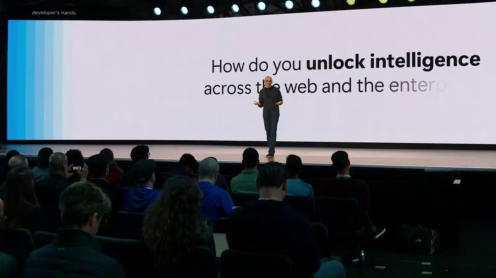
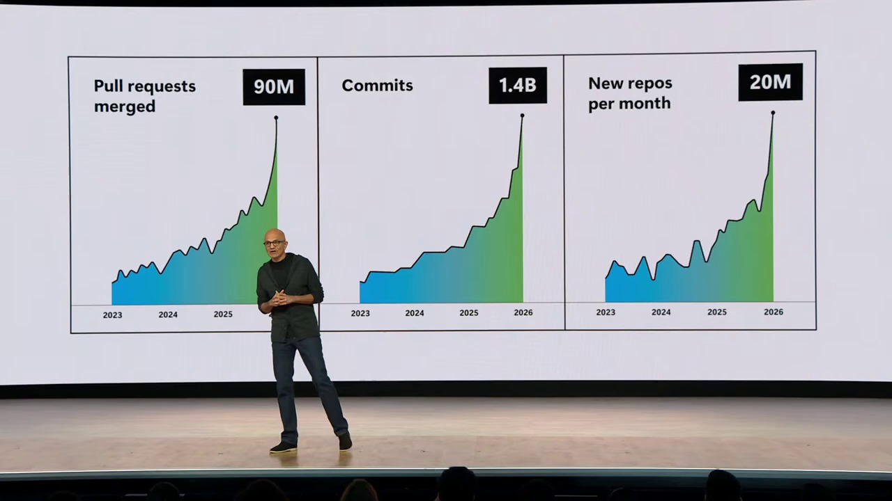
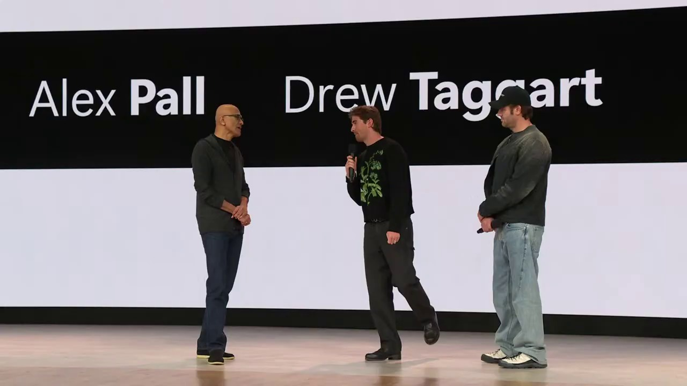
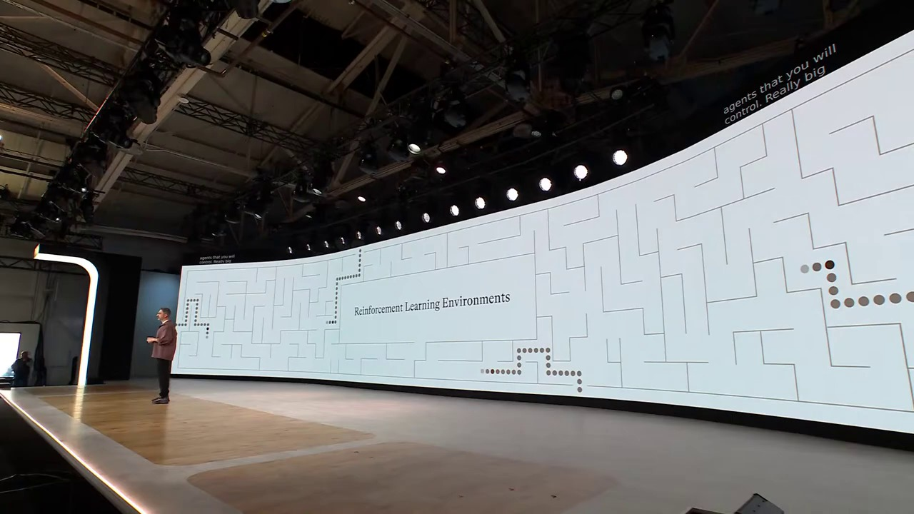
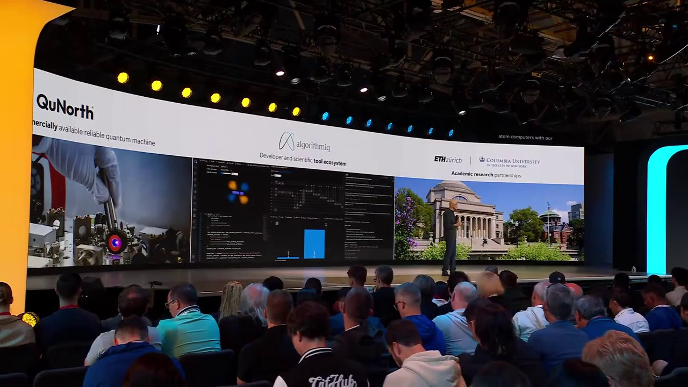
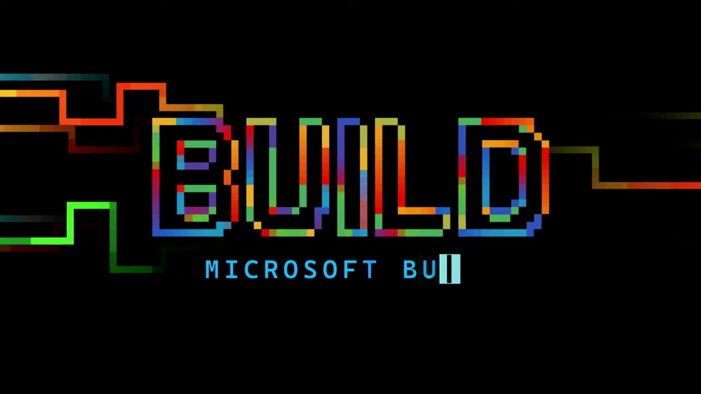
Summary & Script
Microsoft Build 2026 | Opening Keynote
Source: https://www.youtube.com/watch?v=FFMm454fxNA
Video ID: FFMm454fxNA
Overview
The Microsoft Build 2026 Opening Keynote presented by Satya Nadella is an extensive overview of Microsoft's latest innovations and future directions in technology, particularly focusing on the role of AI and the development of new computing capabilities. The keynote covered advancements across multiple spheres, including local AI computation on Windows devices, the expansion of cloud capabilities with Azure, and developments in developer tools. Moreover, the event emphasized interoperability and extensibility within Microsoft’s platforms and the vibrant ecosystem of partners and developers contributing to this frontier ecosystem. Notably, the session highlighted Microsoft’s efforts with NVIDIA and others to bolster the development and deployment of agentic systems across diverse environments.
Speakers & Guests
- Satya Nadella — CEO of Microsoft, provided a thorough explanation of Microsoft's current efforts and strategic direction, focusing on AI, hardware, and partnerships.
- Jensen Huang — CEO of NVIDIA, discussed the collaboration with Microsoft on new AI-capable hardware and software platforms.
- Kayla — Demonstrated new development tools and features in Windows for improved developer productivity.
- Amanda — Showcased Agent 365 capabilities for managing and governing AI agents effectively within organizations.
- Mustafa Suleyman — Presented MAI's new models and the partnership with Mayo Clinic for healthcare advancements using AI.
- Dr. Gianrico Farrugia — President and CEO of Mayo Clinic, discussed the collaboration with Microsoft to improve healthcare through AI.
New Features & Announcements
- Windows ML and Windows AI for Local AI Computation — Expanded scope to utilize full GPU install base for local AI tasks.
- Invox Models — Introduction of reasoning model "Eye on Instruct" and planning model "Ion Plan" for local AI applications.
- Surface RTX Dev VOX — A high-performance development machine featuring 1 Peta flop of AI compute and advanced specs.
- Windows 365 Developer Distribution — Cloud-optimized developer environment for enhanced productivity.
- Intelligent Terminal with GitHub Copilot — New tooling in Windows including over 70 command line utilities.
- Vertical Task Bar and other UI Improvements — Adjustments available in Windows Insider builds.
- Project Solara — Introducing purpose-built devices for "agent first" applications.
- Microsoft Execution Containers (MXC) — A new policy layer for secure execution of AI agents.
- Agent 365 SDK — GA of Agent SDK and expansion for local and Windows-based AI agents.
- Microsoft IQ Layers — Web IQ, Fabric IQ, and Work IQ for grounding AI models in enterprise intelligence.
- Partnership with Fireworks AI — Incorporate OpenWave models into Foundry for broader inference and application development.
Topics Covered
- AI Stack and the Future of Computation — Nadella discussed the evolving AI compute stack, highlighting ubiquitous compute fabric with updates on the edge and cloud infrastructure.
- New Hardware Platforms — NVIDIA’s next-gen SOC (System on Chip) integrates CPU, GPU, and AI capabilities, impacting device performance and design.
- Developer Tools and Windows Features — Introductions and demonstrations of new Windows features designed to enhance developer productivity. Innovations like the Surface RTX and project Solara were introduced as futuristic designs tailored for AI-driven tasks.
- Azure and Data Center Expansion — Azure's expansion with new data centers, focus on efficiency and sustainability, and advanced networking for AI workloads.
- Agentic Systems — Discussion on Windows and Foundry as first-class platforms for running agentic systems, including the launch of Microsoft execution containers for agent isolation.
- Project Solara and Agent-First Devices — Presentation on the initiative to create new devices tailored for AI agents, emphasizing security, adaptability, and enterprise readiness.
- AI Models and Services Update — Introduced a new family of AI models across various domains and highlighted partnerships, insights into Microsoft's model roadmap, and further advancements in coding and reasoning models.
- Quantum Computing Progress — Announcement of Majorana 2 with advanced capabilities proposing better reliability and compact design for practical quantum computing applications.
- Scientific Discovery through AI — Introduction to Microsoft Discovery platform that aims to enhance scientific discovery using agentic systems alongside automated lab and HPC resources.
- Broad Vision for AI in Organizations — Insights into how AI agents are becoming integrated into enterprise systems and Microsoft's vision of a platform supporting organizational unique knowledge and process management through AI.
- AI in Healthcare Collaboration — Discussion of a notable partnership with Mayo Clinic intending to develop frontier healthcare models.
- Discussion on Frontier Tuning — Unveiled tools for custom model training and development, emphasizing enterprise control and competitive advantage.
Key Takeaways
- Microsoft is pushing boundaries with real-time and on-device AI capabilities by democratizing the access to advanced hardware and software tools for developers.
- The introduction of Project Solara marks a paradigm shift towards device ecosystems that are specifically designed and optimized for AI agents.
- Partnership with leading tech companies like NVIDIA and healthcare institutions like Mayo Clinic exemplifies Microsoft's collaborative approach in advancing AI technologies.
- New features and advances in Azure and Windows emphasize scalability, sustainability, and enhanced operational capabilities for enterprise environments.
- The evolution of developer tools and the UI in Windows aims to create a seamless development experience, leveraging GitHub Copilot and enhanced terminal utilities.
- The introduction of MAI models highlights a commitment to innovation in AI by focusing on user and enterprise needs, set to compete with existing benchmarks effectively.
- Quantum advancements with Majorana 2 bring Microsoft closer to realizing scalable and reliable quantum computing, expected to revolutionize processes across various scientific disciplines.
- The focus on governance and security through Agent 365 and MXC indicates a priority on secure and efficient AI deployment within enterprise settings.
- The ongoing expansion of Microsoft’s cloud and data center footprint supports the growing demand for high-performance AI computing infrastructure.
Notable Quotes
- "The idea that the PC evolved from a personal computer to personal AI is really exciting." — Jensen Huang
- "Today we saw Foundry accelerate development, take your agent from local to enterprise-ready, and put it to work in M365." — Amanda
- "That's what Microsoft IQ means by enterprise intelligence." — Elijah
- "We are living in the most remarkable times...It is the question of how do we build the frontier ecosystem together." — Mustafa Suleyman
Podcast Script
MIKE: Welcome to Episode 20 of SlackCasts by PodSlacker — where AI does the watching so you can do the listening. If you want a richer experience with today's episode, visit PodSlacker dot com slash SlackCasts — you'll find a written summary, key frame moments from the video, and an interactive AI chat to explore the topic as deep as you like. Now let's get into it.
JORDAN: Today we're diving into the Microsoft Build 2026 Opening Keynote, and it's a blockbuster. Microsoft's future in AI took the center stage. Satya Nadella detailed a new frontier for local AI on Windows, and cloud advances expanding AI capabilities.
MIKE: Absolutely, Jordan. The push for Windows to support local AI computation with Windows ML and Windows AI stands out. They are taking full advantage of the existing hardware, namely the full GPU install base. The announcements widens the capability for on-device processing, minimizing reliance on cloud connectivity.
JORDAN: That shift is crucial for leveraging AI to its fullest, especially in secure or bandwidth-limited environments. It makes devices more autonomous and responsive too, which is particularly relevant for industries looking to maintain strict data governance and control.
MIKE: And Jensen Huang from NVIDIA spoke about how their next-gen SOC integrates AI capabilities seamlessly into hardware. Microsoft and NVIDIA's collaboration amplifies this local compute strategy, enhancing devices' AI proficiency.
JORDAN: That hardware-software synergy is a step in shaping personal AI systems, as Jensen put it — moving from PC as a personal computer to personal AI. This integration will change our interaction dynamics profoundly.
MIKE: Let's not forget the announcement of Surface RTX Dev VOX. It is a dream machine for developers, packing an impressive AI compute capability with a Petaflop performance. All this power is aimed to favor rapid engineering and deployment for complex AI models.
JORDAN: Speaking of development, the Windows 365 Developer Distribution is cloud-optimized, allowing developers maximum productivity and innovation unattached from traditional desktop boundaries.
MIKE: Yes, and coupled with GitHub Copilot integration into their new Intelligent Terminal, it’s quite the powerhouse for developers. It feels like Microsoft is making a conscientious effort to streamline the development experience by bridging AI's cognitive capabilities with collaborative tooling.
JORDAN: It's compelling to see the focus on agentic systems in Windows and Foundry too. It’s not just about AI capability but building an operational fabric that extends from local devices to expansive cloud infrastructures like Azure.
MIKE: Exactly, Microsoft Execution Containers provide the necessary framework for governance and security of these agentic systems, ensuring that there’s a secure execution layer. This will reassure enterprises implementing AI on a grand scale.
JORDAN: That dovetails perfectly into the enhancements in Microsoft IQ layers, essentially grounding AI with valuable enterprise data to deliver more intelligent solutions. It represents a significant step for enterprises in surfacing actionable intelligence from complex data landscapes efficiently.
MIKE: The project Solara is worth mentioning here too. Touted as purpose-built for "agent first" applications, it bridges existing form factors and invites innovation in new device types, reflecting a clear intent to further embed AI into daily enterprises tasks.
JORDAN: Those agent-first devices could be the missing link in making AI a peripheral advisor in workflows, especially in high-pressure fields like healthcare, where decisions need to be fast and supported by data.
MIKE: Precisely! Speaking of healthcare, what's your take on that partnership with the Mayo Clinic to develop healthcare models? That's quite revolutionary.
JORDAN: Mustafa Suleyman detailed how Microsoft's collaboration with the Mayo Clinic creates AI that assists healthcare providers, aiding decision-making while prioritizing patient safety. It's a classic example of technology amplifying human expertise rather than replacing it.
MIKE: That’s the essence of what they call humanist superintelligence, isn't it? Aligning AI models with operational realities while keeping humanity center stage in every decision and outcome.
JORDAN: And on the quantum front, did you catch the introduction of Majorana 2? Quantum computing advancements are promising to redefine computational speed and capability, with implications set to ripple across every scientific discipline.
MIKE: Majorana 2 brings a thousandfold increase in reliability for qubits, supporting practical quantum computations that weren’t previously possible at this scale. It's engineering progress at its finest.
JORDAN: Combine that with the ambitious scope of Microsoft Discovery, which aims to automate scientific processes and reduce the cycle time for innovation. Applications in sustainability, healthcare, or even material design have a significant impact.
MIKE: Microsoft is setting a new landscape in scientific research, using agentic systems to accelerate discovery windows with an impressive loop of integrated labs, models, and computational power.
JORDAN: It’s all fascinating. The breadth and depth of these individual initiatives converge to underline the potential of this interconnected frontier ecosystem. They all revolve around making intelligent systems seamlessly augment and empower human capabilities.
MIKE: Indeed, they are visionaries in exploring these frontiers, not just creating standalone models but aiming at planetary scale adaptability. As Satya Nadella put it, it's about the value you can build and compound in this frontier ecosystem.
JORDAN: The keynote certainly depicted a future where biased models of ownership, open ecosystems, and collaboration can redefine not just markets but operational efficiencies at scale. These enterprise-grade innovations hold the promise of unfurling new verticals of growth.
MIKE: And listeners, this transformational wave isn’t limited to tech giants like Microsoft. It provides immense opportunity for developers, enterprises, and ecosystems globally to shape this AI-driven world thoughtfully for progress and prosperity.
JORDAN: That collective ecosystem push is critical to ensuring that AI's benefits are equitably distributed and harnessed to unlock human potential meaningfully across geographies and demographies.
MIKE: Well said, Jordan. Before we close, any thoughts on where practitioners should focus their attention moving forward after this keynote?
JORDAN: I’d suggest deep diving into those areas where AI can be interwoven with existing business processes to amplify outcomes. Understanding Microsoft's AI tools and exploring their practical application could unveil new efficiencies and opportunities.
MIKE: And don't forget, testing these new announcements through Insiders Build or preview versions can help enterprises prepare their infrastructures for upcoming transitions without losing pace. Stay ahead of the curve.
JORDAN: Exactly, get hands-on, experience the changes, and design your strategies to accommodate this wave of innovation effectively.
MIKE: That's a wrap on today's SlackCast. Head over to PodSlacker dot com slash SlackCasts for the written summary, visual key moments, and an AI chat to dive even deeper into today's topic. Until next time — slack off smarter.